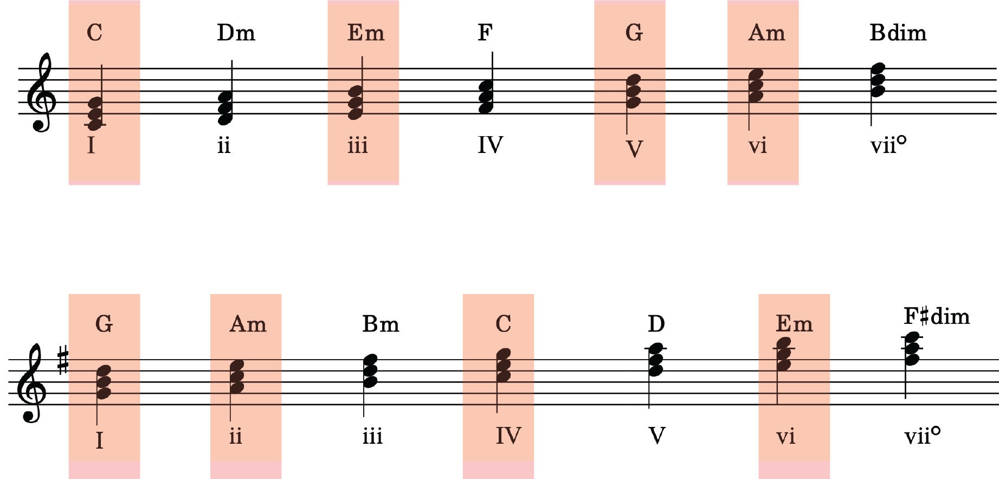
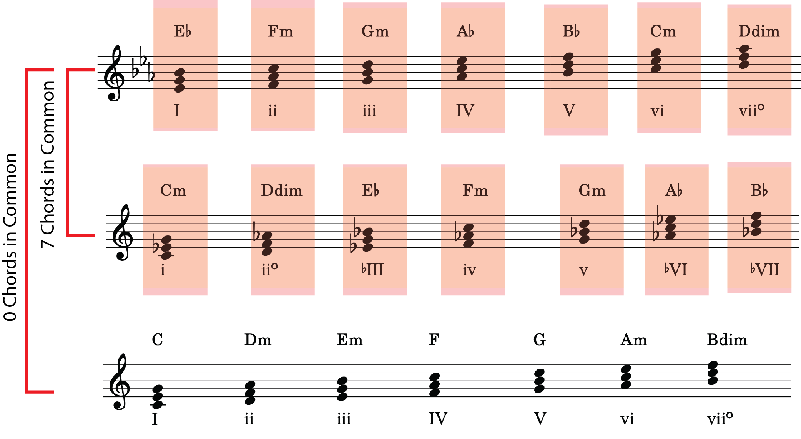

Open Music Theory：繁體中文版
半音轉調
重點整理
- 調式混合提供更多共同和弦的選擇，使轉入遠系調變得容易。
- 作曲家有時只用一個「樞紐音」，而不用整個共同和弦來轉調。這又增加了轉入遠系調的可能。
- 屬七和弦與德式（以及義式）增六和弦具有等音關係，因此可作為共同和弦，轉入比主調高或低半音的調。
- 副屬和弦也可以透過等音重新詮釋而成為共同和弦，使轉調的選擇幾乎沒有窮盡。
- 減七和弦同樣可以作等音重新詮釋，因而以四種不同方式解決，進入四個不同的調。
查看英文原文
Key Takeaways
- Mode mixture offers an easy way to modulate into distantly related keys by providing several more options for pivot chords.
- Sometimes composers will simply use a "pivot pitch" rather than a pivot chord to modulate. This affords more options for moving into distantly related keys.
- Dominant-seventh chords and German (and Italian) augmented-sixth chords are enharmonically equivalent. This allows you to use them as pivot chords into keys that are a semitone above or below the home key.
- Secondary dominant chords can also be used as pivot chords when they are enharmonically reinterpreted, making the options for modulation virtually limitless.
- Diminished-seventh chords can similarly be enharmonically reinterpreted, which means they can resolve four different ways into four different keys.
半音轉調
轉入近系調相對容易：只要比較兩個調號幾乎相同的調，就能在它們共用的和弦中找到共同和弦，而且選擇不少。請看例1： 
{kind=link}
- 圖上由左至右，上列 C 大調為 C、Dm、Em、F、G、Am、Bdim，對應 I、ii、iii、IV、V、vi、vii°；
- 下列 G 大調為 G、Am、Bm、C、D、Em、F♯dim，亦依序為 I 至 vii°。
- 色塊標出共有的 C、Em、G、Am 四個三和弦；
- m＝小三和弦，dim／°＝減三和弦。
例1。C 大調與 G 大調的共同和弦。
不過，當兩個調在五度圈上相距超過一個升降記號時，要找到能讓兩調平順銜接的共同和弦，就比較困難。
若要轉入遠系調，也就是在五度圈上相距超過一個升降記號的調，就需要運用半音和弦的知識，例如調式混合所提供的和弦。調式混合能擴充可用於轉調的共同和弦。例如在 C 大調中，借用同主音的 C 小調和弦後，就容易轉入 E♭ 大調（七個共同和弦）、A♭ 大調（四個共同和弦）、B♭ 大調（原文計為三個共同和弦），以及關係小調 F 小調與 G 小調。例2展示 C 大調透過調式混合，與 E♭ 大調共用的和弦。

{kind=link}
- 0 Chords in Common＝沒有共同和弦；
- 7 Chords in Common＝七個共同和弦。
上列 E♭ 大調：E♭、Fm、Gm、A♭、B♭、Cm、Ddim。
中列是在 C 大調中借用的 C 小調和弦：Cm、Ddim、E♭、Fm、Gm、A♭、B♭，標為 i、ii°、♭III、iv、v、♭VI、♭VII。
兩列七個和弦都相同，只是順序不同。
下列原本 C 大調的七個自然音三和弦，與上列沒有相同的和弦。
例3。以 A 大調的借用和弦 iv 作為共同和弦，從 A 大調轉入 F 大調。
例4。以 D♭ 大調的借用和弦 ♭VI6 作為共同和弦，從 D♭ 大調轉入 F♭ 大調。
反過來，也可以把舊調的自然音和弦，當作新調中的借用和弦，沿五度圈增加升號的方向轉入遠系調。例5列出從 C 大調轉入 A 大調時，可以使用的共同和弦：它們原本是 C 大調的自然音和弦，到了新的 A 大調中則被解讀為借用和弦。
{kind=link}
- 0 Chords in Common＝沒有共同和弦；
- 7 Chords in Common＝七個共同和弦。
上列 A 大調：A、Bm、C♯m、D、E、F♯m、G♯dim。
中列借用 A 小調：Am、Bdim、C、Dm、Em、F、G，標為 i、ii°、♭III、iv、v、♭VI、♭VII。
下列 C 大調：C、Dm、Em、F、G、Am、Bdim。
- 中、下列共有全部七個和弦；
- 上、下列沒有共同的自然音三和弦。
例5。從 C 大調轉入 A 大調時，可用的共同和弦。
例6展示這種轉調手法在聖詠式織度中的運用。
例6。從 A♭ 大調轉入 C 大調：以 A♭ 大調的自然音和弦 vi 作為共同和弦，將它重新解讀為 C 大調的借用和弦 iv。
例7出自布拉姆斯《圓舞曲》Op. 39 第14號，是一個有趣的半音轉調範例。布拉姆斯以局部調性 G 大調中的自然音和弦 viio6 作為共同和弦，轉入 E 大調；同一和弦在新的 E 大調中，被重新解讀為借用和弦 iio6。
查看英文原文
Chromatic Modulation
Modulation to closely-related keys is a relatively easy task; we can find a pivot chord by looking at the group of chords shared between two keys that have nearly-identical key signatures. There are plenty of them. See Example 1:
Example 1. Common chords in the keys of C and G major.
When two keys are more than one accidental apart on the circle of fifths, however, it becomes more difficult it is to find a pivot chord that will enable a smooth modulation between the two keys.
To modulate to a distantly-related key, that is, a key that is more than one accidental away on the circle of fifths, requires us to use our knowledge of chromatic chords, such as those found through mode mixture. Mode mixture enables us to expand the number of possible pivot chords for modulation. For example, in the key of C major, the chords made possible through mode mixture (i.e. those chords found in C minor, its parallel key), we can now modulate easily to E-flat major (7 shared chords), A-flat major (4 shared chords), B-flat major (3 shared chords), and their relative minor keys, F minor and G minor. Example 2 shows the common chords shared between C major and E-flat major, made possible by using mixture chords in C major.
Example 2. Shared chords between C major and E♭ major, made possible through mode mixture.
Example 3 shows a modulation from the key of A major to F major, using iv from A major as a pivot chord. Example 4 shows this technique being used by Verdi in his opera Rigoletto.
Example 3. Modulation from A major to F major using a mixture chord in A major (iv) as a pivot chord.
Example 4. Modulation from D♭major to F♭ major using a mixture chord in D♭ major (♭VI6) as a pivot chord.
Conversely, we can use diatonic chords in the old key as mixture chords in the new key to modulate to distant keys in the "sharpwise" direction on the circle of fifth. Example 5 shows the potential pivot chords when modulating from C major to A major by way of the diatonic chords in C major as mixture chords in the new key of A major.
Example 5. Potential pivot chords when modulating from C major to A major.
A modulation using this technique in a chorale setting is shown in Example 6.
Example 6. Modulation from A♭ major to C major using a diatonic chord in A♭ major (vi) as a pivot chord that is interpreted as a mixture chord (iv) in C major.
Example 7 shows an interesting chromatic modulation from Brahms's Waltz, op. 39, no. 14. Here, Brahms uses a diatonic viio6 chord in the local key of G major to pivot to E major, reinterpreting the chord as iio6, a mixture chord in the new key of E major.
共同音轉調
有時可以不用整個共同和弦，而只靠一個共同音轉入遠系調。尤其是主音與原調主音相距三度的調，很適合用這個手法銜接。這些主音相距三度、並涉及半音變化的調性關係，稱為「半音三度關係」或「半音中音關係」（chromatic mediant）。例如：C 大調與 A♭ 大調的主三和弦共有 C；C 大調與 E♭ 大調共有 G；C 大調與 A 大調共有 E；C 大調與 E 大調也共有 E。這些關係如例8所示。
舒曼在歌曲〈獻詞〉（Widmung）中，正是用這個手法，從 A♭ 大調轉入具有半音中音關係的 F♭ 大調；為方便閱讀，譜上寫成 E 大調。在例9中，第13小節的完全正格終止（PAC）清楚確立 A♭ 大調。我們的聽覺仍留住抵達時的 A♭，這個音接著被重新詮釋為 G♯，成為 E 大調主和弦的三音。幾小節後，E 大調便獲得確認。
查看英文原文
Common-Tone Modulation
Sometimes we can use a common-tone, rather than a pivot chord, to modulate to distantly related keys. In particular, the key areas that are a third away from the home key are easily modulated to using this technique.These keys, chromatically altered tonics that are a third away from the home key, are called “chromatic third” or “chromatic mediant” relations. For example: C and A♭ major (share the common tone C), C and E♭ major (share the common tone G), C and A major (share the common tone E), C and E major (share the common tone E). These relationships are shown in Example 8.
In the song "Widmung," Robert Schumann uses precisely this technique to modulate from Ab major to a chromatic-mediant related key, Fb major (written as E major for clarity). In Example 9, we can see the key of A♭ clearly confirmed by way of a PAC in m. 13. Our ears hang on to the A♭ arrival, which is then reinterpreted as a G♯, the third of the tonic chord in E major, which is confirmed a few measures later.
等音重新詮釋
前一個例子把 A♭ 重新詮釋為 G♯，使它成為 E 大調主和弦的三音。等音關係，以及等音所容許的重新詮釋，為轉入遠系調開啟了許多可能。你或許已注意到，其中一種關係就存在於屬七和弦與德式增六和弦之間。
例10提供兩個例子，示範如何將屬七和弦重新詮釋為德式增六和弦，以及反過來的做法。在例10a）中，七音向下級進，解決到主和弦的三音，低音則跳進至主和弦的根音。接下來，B♭ 被重新詮釋為 A♯，改為向上級進解決；低音同時向下級進，兩音都解決到 [latex]\hat{5}[/latex]，由 E 大調的終止四六和弦支撐。這種聲部連接的差異——七音向下級進解決，而增六度向外擴張、解決到 [latex]\hat{5}[/latex]——正是屬七和弦與等音的德式增六和弦之間，最根本的區別。
例11展示這種等音重新詮釋的實際運用。小提琴獨奏在 C 大調的屬七和弦上，演奏一段很長的裝飾奏。樂團再次加入時，先確認這個屬和聲；但和弦解決時，獨奏小提琴的 F♮ 向上半音移到 F♯，大提琴與低音提琴的 G 則向下半音解決到 F♯。就在這一刻，G–F 的小七度被重新詮釋為 G–E♯ 的增六度，解決到 B 小調的屬和弦。隨後幾小節逐漸補齊這個和聲，到第304小節便確認了 F♯ 大三和弦，也就是 B 小調的屬和弦。
因此，若將屬七和弦重新詮釋為增六和弦，並以它作為共同和弦轉入新調，結果會是向下半音的轉調。反過來，把增六和弦重新詮釋為屬七和弦，則會向上半音轉調。例12正是如此。海頓在 D 大調的德式增六和弦 B♭–D–F–G♯ 上停留三小節，並利用延長記號，讓聽眾細細體會這個和聲。和弦接著沒有在 D 大調中解決；G♯ 被重新詮釋為 A♭，向下半音解決到新調 E♭ 大調主和弦的三音。
當然，任何屬七和弦都可以運用這個手法，包括副屬七和弦，因此又能開拓許多轉調的可能。例13中，舒伯特把德式增六和弦重新詮釋為 V7/IV，從 C♯ 大調轉入 A 大調——又是一個轉入半音中音關係調的例子！
查看英文原文
Enharmonic Reinterpretation
In the previous example, the note A♭ was reinterpreted as G♯, which became the third of the tonic chord in the key of E major. Enharmonic equivalence (and the reinterpretation made possible by this equivalence) enables us to open up numerous possibilities for modulating into distantly related keys. One such equivalence that you may have noticed already is that between the dominant-seventh and the German augmented-sixth chord.
Example 10 provides two examples of how a dominant seventh can be reinterpreted as a German augmented-sixth chord, and vice versa. In Example 10 a), the seventh resolves downward by step to the third of the tonic chord, while the bass leaps to the root of the tonic chord. Following this, the B♭ is reinterpreted as A♯, and resolves up by step. Along with the bass moving down by step, these two pitches resolve to [latex]\hat{5}[/latex], supported by a cadential six-four in the key of E major. This difference in voice leading (seventh resolving down by step, augmented sixth resolving outward to [latex]\hat{5}[/latex]) is the fundamental distinction between a dominant seventh chord and its enharmonically equivalent German augmented sixth.
Example 11 shows this kind of enharmonic reinterpretation in action. The violin soloist plays a long cadenza over a dominant-seventh chord in the key of C major. When the orchestra joins in again, they confirm the dominant harmony, but when the chord resolves, the F natural in the solo violin moves upward by half step, to F♯, and the G in the cellos and basses resolves down by half step to F♯. In this moment, the G-F minor seventh is reinterpreted as a G-E♯ augmented sixth, resolving to the dominant in B minor. This harmony is filled out in the next few measures, confirming a dominant chord F♯ major in m. 304.
So, if you reinterpret a dominant-seventh chord as an augmented-sixth chord and use it to pivot into a new key, the resulting modulation will be down a half step. Conversely, if you reinterpret an augmented-sixth chord as a dominant-seventh chord, the resulting modulation will be up a half step. Example 12 shows precisely this. Here, Haydn spends three measures on the German augmented-sixth chord in the key of D major (B♭-D-F-G♯), allowing the audience to ruminate on the harmony through the use of a fermata. Instead of resolving the chord in D major, the G♯ is reinterpreted as an A♭ and it resolves down by half step to the third of the new tonic of E♭ major.
You can, of course, use this trick with any dominant-seventh chord (say, a secondary dominant), opening up numerous possibilities for modulation. Example 13 shows Schubert reinterpreting a German augmented-sixth chord as a V7/IV chord to pivot from the key of C♯ major to A major (another instance of a modulation to a chromatic mediant-related key!).
重新詮釋減七和弦
如同屬七和弦與德式增六和弦之間的關係，減七和弦也能透過等音重新拼寫，作為轉入遠系調的共同和弦。這來自它的對稱性：減七和弦將八度均分為四份，每份相距小三度，因此其移調後的不同音集合相當有限。實際上，這表示減七和弦中的任何一個音，都可以被重新解讀為和弦根音。例14將 B 減七和弦的各個和弦音，分別解讀為根音。雖然你在鋼琴同一位置按下的仍是同樣四個琴鍵，卻會產生共同和弦「改變轉位」的印象；原因是新的詮釋改變了我們對實際低音的聽法。
貝多芬《C 小調鋼琴奏鳴曲》Op. 13 中，就有運用這個手法的經典例子，見例15。這個片段用了數個減七和弦。第一個減七和弦的表現符合慣例，用來主音化屬和弦。第二次聽到減七和弦時，出現的是局部調性 G 小調中的 F♯–A–C–E♭；它也如預期，解決到第一轉位的主和弦。下一小節又出現同一和弦，但這次貝多芬將它拼寫為 F♯–A–C–D♯。新的拼寫反映出新的功能：D♯ 成為新調 E 小調的導音。
當然，這個手法可用於任何減七和弦，不限於局部調性本身所使用的那一個。例16中，布拉姆斯先讓我們預期第5小節的減七和弦會主音化屬和弦。這份預期來自前一小節延伸的主音化：減七和弦在那裡首次出現。第4小節將它拼成 A–C–E♭–G♭，功能是 E♭ 大調中屬和弦的 viio7，也就是 viio7/V。第5小節再次出現這個和弦，卻沒有符合預期，而是解決到第一轉位的 G 小三和弦。布拉姆斯透過不同的拼寫，預先透露了這種可能：原文將與前者等音的和弦寫為 A–C–E–F♯（音名疑誤見譯註）。這個拼寫著眼於解決到 G 小調，因為 F♯ 是新調的導音。G 小調確實成為新的主調，並由幾小節後的終止加以確認。
查看英文原文
Reinterpreting Diminished-Seventh Chords
Like the dominant-seventh/German augmented-sixth, the diminished-seventh chord can be enharmonically respelled to serve as a pivot chord into distantly related keys. This is because of its symmetrical nature: the diminished-seventh chord divides the octave into four equal parts (each a minor third apart), and is thus limited in possible transpositions. Practically speaking, this means that any note in a diminished-seventh chord can be interpreted as the root of the chord. In Example 14, you can see a B diminished-seventh chord interpreted with each of its chord members functioning as the root. Although you would be playing the same four keys on the piano in the same position, this gives the impression that the pivot chord is "changing inversion"; this is because the new interpretation changes how we hear the sounding bass note.
A classic example of this technique can be found in Beethoven's Piano Sonata in C minor, Op. 13, found in Example 15. In this passage, Beethoven uses several diminshed-seventh chords. The first one that we hear behaves normally, functioning to tonicize the dominant. The second time we hear a diminished-seventh chord, we hear the one local to the key of G minor: F♯-A-C-E♭. This one also behaves as we expect it to, resolving to a tonic chord in first inversion. We hear the same chord again in the following measure, but this time Beethoven spells the chord F♯-A-C-D♯. The new spelling reflects the chord's new function, with D♯ serving as the leading tone in the new key of E minor.
You can, of course, use this technique with any diminished-seventh chord, not just the one diatonic in the local key. In Example 16, Brahms set up an expectation that the diminished-seventh chord in measure 5 will tonicize the dominant. This expectation is set through the extended tonicization heard in the previous measure, where we first hear this diminished-seventh chord. In measure 4, the chord is spelled A-C-E♭-G♭, and functions as viio7 of the dominant in E♭ major. In measure 5, we hear this chord again. Our expectations are thwarted, however, as the chord instead resolves to a G minor triad in first inversion. Brahms gives us a clue that this may happen by spelling this chord differently (despite the fact that it is enharmonically equivalent): A-C-E-F♯. It is spelled with the intended resolution to G minor in mind, as F♯ is the leading tone in the new key. G minor indeed becomes the new tonic, which is confirmed by a cadence a few measures later.
結語
以上範例顯示，減七和弦，以及屬七和弦與增六和弦，在調性運用上都比初學時想像的更有彈性。它們可以成為通往遠系調的入口，讓作曲家快速而流暢地穿梭於不同調性。
媒體出處
- 半音轉調——近系調（chromatic modulation – closely related keys）
- 遠系調——借用和弦轉作自然音和弦（distantly related keys – mixture to diatonic）
- 遠系調——自然音和弦轉作借用和弦（distantly related keys – diatonic to mixture）
查看英文原文
Conclusion
In summary, the examples above have shown that both diminished-seventh chords, along with dominant-seventh/augmented-sixth chords, are much more tonally flexible than you may have thought when you first learned about them. These chords can serve as gateways into distant keys, allowing composers to freely navigate through tonality both quickly and elegantly.
Media Attributions
- chromatic modulation – closely related keys
- distantly related keys – mixture to diatonic
- distantly related keys – diatonic to mixture